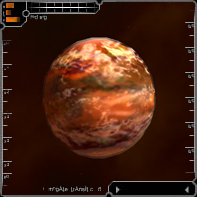

| Amananth | Hyperial | Octavius | Quantar | Solrain |
Hyperial Societal OverviewThe battles over the Great Venure Belt, which lies between Hyperial and Quantar, have left the once glorious Hyperial system in a state of decay. Although the war is officially over, there is still great hostility between the two factions. To this day, Hyperial government claims no knowledge of the reselling of Quantar body parts on faction stations. Hyperions pride themselves on tradition, order, and nationalism, and object to the neutral, non-political stance of The Reconstruction Initiative. This, coupled with internal economical troubles from the lost GVB wars with Quantar, has brought Hyperial's space program to a grinding halt. They are therefore currently unable to participate in TRI's efforts. Hyperial's reformed government is now focusing all efforts to advancing medical and weapons research. Most of the other systems in the galaxy depend on Hyperial for advanced medical supplies, often ironically as a result of the highly destructive weaponry from the same sector. |
Hyperial System OverviewThe Hyperial System is located between Quantar and Solrain, and consists of approximately 10 sectors. At present the Hyperions have built 1 space station - Hyperial. This station is located near the dominant planet of the Hyperial System - Hypsos. |

Hyperial: HypsosPopulation: 3,400,000,000 Hypsos is believed to be the only Hyperion planet that survived the Great Collapse. Its famous medical and research facilities provide employment for roughly half the working population, while the remaining work force is split between weapons manufacturing and several fringe industries. |